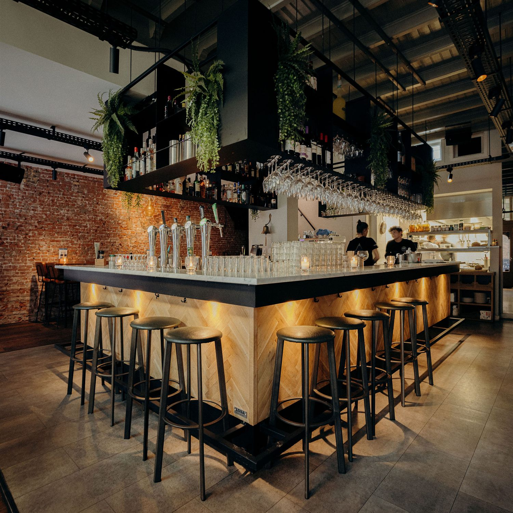
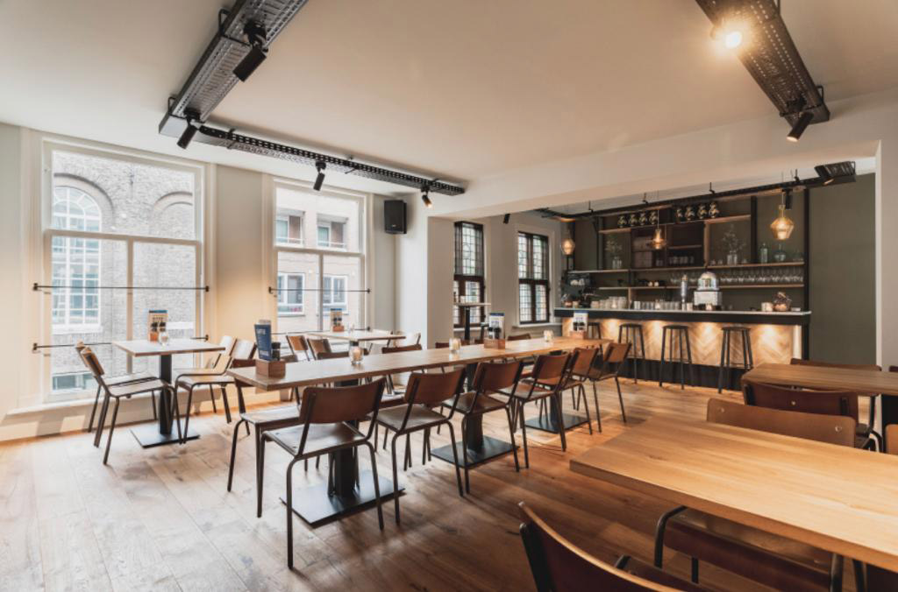

Visstraat 7 / 3311 KX Dordrecht
deCrimp
Modern klassiek restaurant in het centrum van Dordt
Frans georiënteerd, in een monumentaal pand aan de Visstraat. Verse seizoensproducten, bereid met passie en aandacht, en een glas wijn erbij.
Woensdag t/m zondag vanaf 11.00maandag en dinsdag gesloten*
De kaart
Een moderne lunch of een klassiek diner, een kopje koffie met vers gebak of toch een borrel aan de Citybar. Klassieke gerechten in een nieuw jasje.
V staat voor vegetarische optie. Al onze producten kunnen allergenen bevatten. Heb je vragen over de gerechten op onze kaart? Ons team helpt je graag.
Kaart als bestand: lunch, diner, bites, bar & barista / Menu in English
Om samen van te genieten
Kaasfondue
Pure comfort in een pannetje: romige gesmolten kaas, vers desembrood, krieltjes in de schil en heerlijke seizoensgroenten om te dippen. Perfect om samen te delen bij een goed glas wijn.
Te bestellen vanaf 2 personen, reserveer minimaal 24 uur van tevoren. Laat je beste cheese pull zien met #crimpfondue.
Bel om te reserverenKaasgeluk x2
Kies jouw favoriet
Zwitserse kaasfondue
29,50Pure traditie in een pannetje. Smeltend lekker en altijd goed.
Truffel kaasfondue
31,50Een vleugje luxe. Romig, rijk en onweerstaanbaar met truffel.
Bij al onze fondues geniet je onbeperkt van vers desembrood, smakelijke seizoensgroenten en krieltjes in de schil. Prijzen per persoon.
Lekker voor erbij
Entrecote 160 gr 16,50
Wijndeal
Per fles rood, wit of rosé, zorgvuldig door ons gekozen 22,50
Modern klassiek
Het pand aan de Visstraat is al 400 jaar een icoon van de stad. Het monument “de Crimpert Salm” uit 1608 is een echte blikvanger, en De Crimp heeft er zijn naam aan te danken.
In 2018 kreeg het restaurant een grote renovatie. De sfeer is nu modern en huiselijk: een combinatie van modern en klassiek. Die lijn trekken we door naar ons menu, met klassieke gerechten in een nieuw jasje en de warme Franse sfeer in onze gerechten én wijnen.
Het ervaren team heeft plezier en passie voor het vak en hecht veel waarde aan kwaliteit en duurzaamheid. Daarom werken we samen met de beste leveranciers uit onze omgeving.
Geniet op het terras, in het restaurant of aan de Citybar.

Private dining & vergaderen
Wilt u met uw gezelschap dineren, lunchen of vergaderen, maar liever zonder de drukte van het restaurant? Dan is onze Private Dining ruimte de oplossing.
De ruimte ligt direct boven het restaurant, geheel in de stijl van De Crimp. Geen saaie vergaderruimte, maar een sfeervolle ambiance met alle nodige gemakken en comfort, en een fantastisch privé-terras/balkon.
- ca. 40
- personen zittend
- ca. 50
- personen voor een borrel, feestje of walking dinner
Open & contact
| Maandag | gesloten* |
|---|---|
| Dinsdag | gesloten* |
| Woensdag | vanaf 11.00 |
| Donderdag | vanaf 11.00 |
| Vrijdag | vanaf 11.00 |
| Zaterdag | vanaf 11.00 |
| Zondag | vanaf 11.00 |
* Behalve op feestdagen en voor grote gezelschappen.
Restaurant De CrimpVisstraat 7
3311 KX Dordrecht
078 614 55 57
info@decrimp.nl